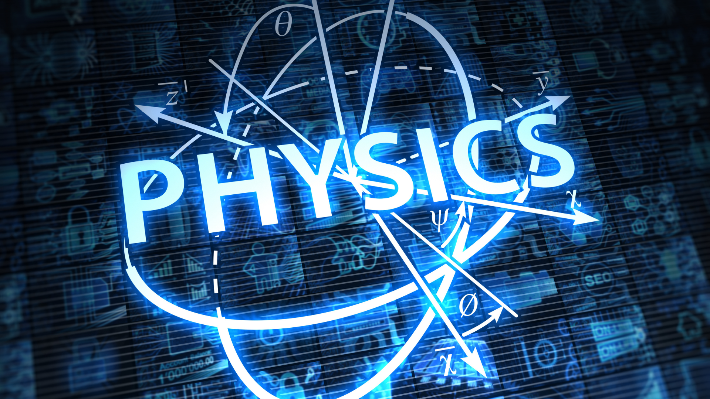
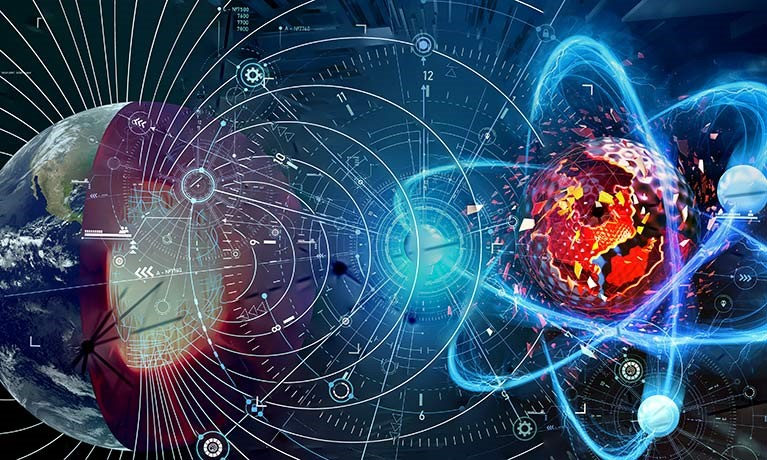
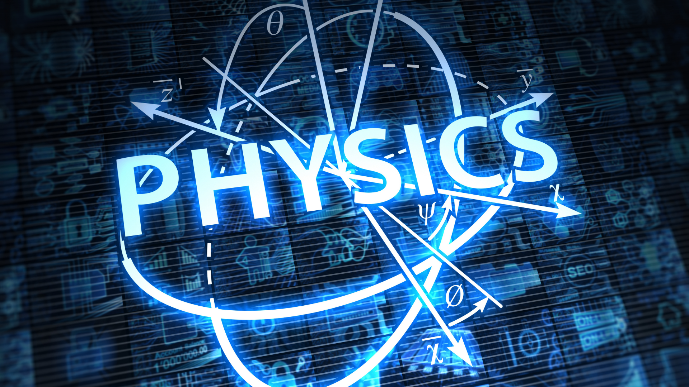
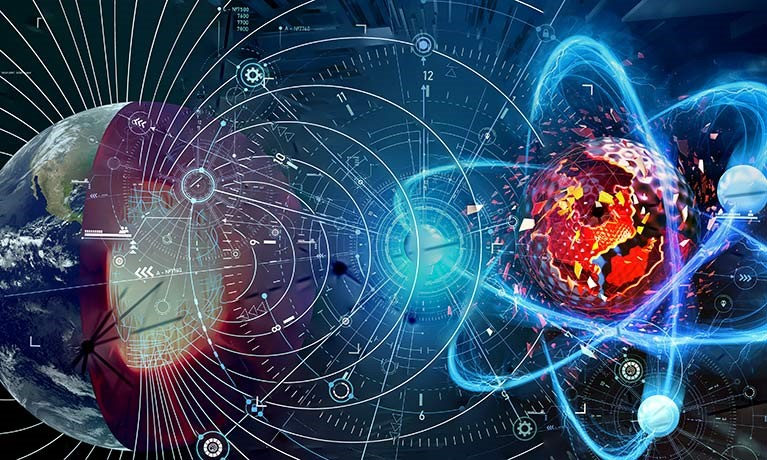

Course ID: BSP001
Course Name: B.Sc in Physics
Course Code: PH101
🎯 Scope of B.Sc Physics
B.Sc in Physics provides a deep understanding of physical laws and natural phenomena. It forms the backbone of many advanced scientific and engineering fields.
- Theoretical & Applied Physics
- Astrophysics & Space Science
- Nuclear and Particle Physics
- Electronics & Instrumentation
- Renewable Energy
- Quantum Mechanics & Optics
✅ Benefits of Studying Physics
- 🧠 Strong Analytical Thinking: Develops logical problem-solving skills
- 🔍 Research-Oriented: Ideal for exploring scientific principles
- 💼 Transferable Skills: Applicable in various industries
- 🌐 Interdisciplinary Pathways: Connects with engineering, IT, finance
- 💰 Government Job Prospects: Opportunities in DRDO, ISRO, BARC, etc.
⭐ Advantages of B.Sc Physics
- 📈 Growing Demand across energy, aerospace, electronics, AI
- 🎓 Strong base for M.Sc, Ph.D., and other postgraduate studies
- 🧪 Contribution to scientific research and innovation
- 🌍 Global career opportunities in academia and industry
- 👨🏫 Teaching & coaching options in schools and institutes
📘 Higher Study Options After B.Sc Physics
- M.Sc in Physics – Astrophysics, Nuclear, Electronics, etc.
- M.Sc in Applied Physics / Geophysics / Material Science
- Integrated M.Sc-Ph.D or direct Ph.D.
- M.Tech – Nanotech, Optical Engineering, etc. via GATE
- MCA / Data Science / Machine Learning
- MBA – Operations, Analytics, Tech Management
 


